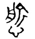
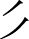
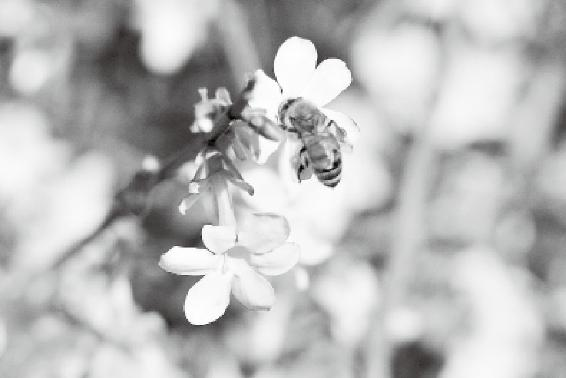

我们现代人把自己摧残扭曲，甚至变态近乎病态疯狂，不是为了自得，是为了让他得。
我从小跟母亲一块学中医，做的第一件事就是替妈妈抄很多医书，而且抄的第一本就是《黄帝内经》，这件事让我获益匪浅。
经过了人生的一些挫折、起伏、悲欢离合以后，突然有一天，我又拿起《黄帝内经》，一看，就想流眼泪。为什么？古人都跟你说了，这是怎么回事儿，该怎么应对；如果应对不好就会得什么病，你不依照着做才导致了恶果。
我突然发现，自己这么多年都是捧着金饭碗在要饭。
经文：
以恬愉为务，以自得为功，形体不敝，精神不散，亦可以百数。其次有贤人者，法则天地，象似日月，辨列星辰，逆从阴阳，分别四时，将从上古合同于道，亦可使益寿而有极时。
“以恬愉为务”
徐文兵：说到“以恬愉为务”，我特别要讲一讲这个有意思的字“愉”。
梁冬：“欢愉”的“愉”，“愉快”的“愉”。
徐文兵：请问“愉”是什么意思？
梁冬：这个学问大啦！我知道很多意思，就是讲不出来，但这个“愉”有愉快的意思。
徐文兵：“愉”是“愉”，“快”是“快”，两个字的意思不一样。《黄帝内经》讲“恬愉为务”，是说那种不懂养生的人“务快其心”。所以你不能说“愉”就是“愉快”。
我专门研究过这些带“忄”，还有“心”的汉字，老师教了以后我们都知道它大概是什么意思。比如，“取悦”的“悦”、“愉快”的“愉”、“心旷神怡”的“怡”，似乎意思都差不多。
梁冬：高兴的意思。
徐文兵：为什么高兴？这三个放一块儿有什么区别？这就没人给我们讲了。
梁冬：主要是老师也不太懂。
徐文兵：我专门研究了一下“愉”，它是“忄”偏旁，通心了。这个“愉快”的“愉”金文是“

”，上面原来不是个“人”，而是个“△”。汉字有很多生殖崇拜的符号，三角这个角儿冲上另有意义。
梁冬：是一个人一横，其实就是个三角。
徐文兵：而且这个三角是尖儿冲上的，研究古代汉字就知道，汉字有很多生殖崇拜的符号，三角这个角儿冲上另有意义。
梁冬：是男性？
徐文兵：对，角冲下的是女性。“俞”上面是个三角，下面左边是个月，什么意思？
梁冬：“月”指肉。
徐文兵：本来“月”的右边不是“刂”，而是“

”。男性，攻击，肉，出水，什么意思？梁冬：就是HAPPY！
徐文兵：所以“愉”在古代是专门指性生活带来的欢悦感觉。
“愉”在古代是专门指性生活带来的欢悦感觉。
梁冬：所以不能随便说我今天很愉快。
徐文兵：如果你真“愉”了的话就这么说。所以《诗经》里面有很多词描写说“愉愉如也”，“愉”是通过性爱方式达到欢乐的那种状态，它不见得“快”。
梁冬：圣人追求大众享受。
徐文兵：一是前面讲到的心安理得、恬不知耻、恬淡虚无，还有就是“愉”。道家由此发展出另一门学问叫“研究房中”。为什么要研究房中呢？因为它为务，把它当成自己的任务。
道家为什么要研究房中呢？
梁冬：所以我个人还是比较喜欢道家的。
徐文兵：所有人都应该喜欢道家。
梁冬：但是道家常常受到很多来自于外在的压抑。这种压抑其实还是自己内心不够充实和不够有慧力的一种体现。
道家常常受到很多来自于外在的压抑，这种压抑其实还是自己内心不够充实和不够有慧力的一种体现。
徐文兵：有的人对于我解释的“愉”有不同意见，觉得难以理解。我再给大家举个例子。古代的字的构造都有同根同源，比如带“俞”的字都有相同的道理。“榆树”的“榆”也带有“俞”，为什么老榆木叫榆树？因为吃完榆树的皮和榆钱儿以后，人会产生欢悦的感觉，然后美美睡一觉，所以叫“榆树”。
梁冬：为什么我们现在没得吃了呢？
徐文兵：因为被人拔光了。古代没有饭吃的时候，穷人就扒榆树皮磨成粉吃，而有饭吃的时候，榆树皮都让人拿去做药了。
你再看故宫的大门，都有门钉，上九横下九竖，共八十一颗。那个门钉用一个汉字来说就叫“窬”，上面一个穴位的“穴”，底下一个“俞”。男性生殖器符号突起的象征，也叫“窬”。
带“俞”的最有意思的一个字是“偷东西”的“偷”，左边一个单人旁，右边一个“俞”，为什么它不发“俞”的音？说文解字上说，“偷”即行苟且之事。
梁冬：所以古代的“偷”，不是一般意义上的偷双鞋、偷根玉米之类的。
徐文兵：在古代，这个“偷”专指“偷情”。所谓“偷情”“偷汉子”“偷人”，是非正当的苟且，所以叫“偷”。
在古代，“偷”专指“偷情”。
为什么孔乙己说读书人偷书不叫“偷”，叫“窃”。孔乙己真是个有文化的知识分子，他知道茴香豆的“茴”有四种写法，知道“偷”专指“偷人”。
孔乙己真是个有文化的知识分子。
梁冬：难怪古人说“妻不如妾，妾不如偷”。
徐文兵：偷不如偷不着。
梁冬：有意思，但那是古代封建的错误思想。
徐文兵：我们研究《黄帝内经》的医学和哲学思想，不应该回避这个事情。这是很正常的，我们不能像宋明的腐儒一样说什么“饿死事小，失节事大”，连做爱的时候，还不说自己做爱，说什么“非为色也，是为后也”，意思是我可不是为了“愉”，而是为了繁殖后代，因为“不孝有三，无后为大。”这些迂腐理论把人拧巴扭曲变态了，真假！
我们不能像宋明的腐儒一样，连做爱的时候，还不说自己做爱，而是为了繁殖后代，这些迂腐理论把人拧巴扭曲变态了。
梁冬：圣人是以“恬愉为务”，为了给自己的生活带来快乐，他还专门琢磨、研究这件事情。
“以自得为功”
徐文兵：“自得”是我们现代人最欠缺的。很多人说，“我应该怎么做事儿？”我说，你是要做给别人看，还是为了让自己高兴？我们现代人把自己摧残扭曲，甚至变态得近乎病态疯狂，目的是什么？不是为了自得，是为了让他得。
我们现代人把自己摧残扭曲，甚至变态近乎病态疯狂，不是为了自得，是为了让他得。
大冬天穿个裙子自个儿冻得瑟瑟发抖，甚至麻木了，为什么呀？让别人看着高兴。别人高兴，她自个儿也高兴。
自得是什么？自己精神独立、经济独立，能够赡养自己。
可我们现在很多人是为名利而奔波，奋斗到死。回过头来仔细想一想，“名”是什么？“名”是别人对你的评价，好名声、坏名声都是。如果你的自我认同、自我评价很高，能够自得的话，还在乎别人说你什么吗？
别人骂你，无所谓；别人把你捧到天上，对你也没有影响，所以你也就不在乎名了。不会别人说你好，你就一下高兴地陷进去；别人说你不好，你就郁闷得要死。
别人骂你，无所谓；别人把你捧到天上，对你也没有影响，所以你也就不在乎名了。
没有自得的人会在乎名，很多人说自己不在乎名，我觉得应该先考察一下，他有没有这种自得的本领。如果没有，他就是在说假话。
没有自得的人会在乎名，很多人说自己不在乎名，我觉得应该先考察一下，他有没有这种自得的本领。如果没有，他就是在说假话。
梁冬：其实要做到“自得”，不在乎名，真的很不容易。举个最简单的例子，咱们自己也经常在网上搜一搜自己的名字，看看别人怎么评价我们，是吧？
徐文兵：关注别人的评价，并不代表我们一定会被这些评价影响。如果没有这些评价，没有这些人说我们好，我们是不是就活得不快乐了？如果真的是那样，那咱们就是傻帽。如果咱们在有自我评价的前提下，看到别人认同我们，就会觉得锦上添花。就是年三十儿搂草打兔子，有它没它你都要过年，我们不能因为没这个“兔子”就不过年，就不活了。
有的人刚好相反，你不给我个名分，不给我个什么称号，我就不行了。我对这种人的评价是没成年。
我们做事情都要挣钱，要谋利益，“利”是什么？别人给你的好处。如果别人不给你，你自己能跟天地索取的话，你还会不会在乎别人给不给你？当然不会。
我们做事情都要挣钱，要谋利益，“利”是什么？别人给你的好处。如果别人不给你，你自己能跟天地索取的话，你还会不会在乎别人给不给你？当然不会。
梁冬：建立自我小循环。
徐文兵：所以，我说自我独立、自我宽慰、赡养自己的本事，是每个人都应该具备的。有了这个前提，你再说不在乎名，那我就相信你。
自我独立、自我宽慰、赡养自己的本事，是每个人都应该具备的。有了这个前提，你再说不在乎名，那我就相信你。
梁冬：否则就是假的。
徐文兵：真假！
梁冬：萨特说过：“他者即地狱。”我觉得，用您的话来解释这句话，再合适不过。就是说，如果用别人的给予，别人的标准来对自我进行评价，就跟到地狱是一样的。
徐文兵：没错，因为人跟人没有可比性。你是天造地化出来的一个优秀产物，你有你的个性，有你的独立性。但是很多人陷入了集体无意识之中，跟着潮流走，人云亦云。举个例子，一个老师想管这孩子，通常会采用这样的方法：第一，封她当个小组长；第二，奖给她一个苹果。结果孩子为了得到这种名利，就会孜孜以求。有的人一生都不是为自己活着，而是为身外的名利活着。
你是天造地化出来的一个优秀产物，你有你的个性，有你的独立性。但是很多人陷入了集体无意识之中，跟着潮流走，人云亦云。
所以我说脚后跟着地，自己解决吃穿住的问题，剩下的事情以后再说。如果这个解决不了，那就跟蘑菇长在树上一样，一辈子依附于别人。你说怎么自得？
梁冬：什么叫“以自得为功”呢？
徐文兵：我们经常说练功夫，“外练筋骨皮，内练一口气”“练武不练功，到老一场空”，这个“功”专指“气”的循环。什么叫自得？我把肾精化成肾气，然后我的肾气去养心神，整个一个小周天，这叫“功”。没这个本事，那只能去打激素了。
梁冬：也就是“可持续的自我发展”。
徐文兵：你天生就有这种能力，干嘛依赖别人呢？只有快死的人，为了急救才打一针强心针，打一针肾上腺素。
梁冬：所以，如果别人不表扬自己，一定要自我表扬，这个就叫做“自我循环”。
如果别人不表扬自己，一定要自我表扬，这个就叫做“自我循环”。
徐文兵：关于“自得为功”，我再补充几句。我们刚才说名声、利益、地位、荣誉等都是名。“自得为功”就是说我自己能生产出生理上需要的所有的东西。比如，“干燥综合症”——眼睛干怎么办？
梁冬：滴眼药水！
徐文兵：人工泪液！你说的这种眼药水，每天晚上睡觉前要上闹钟，隔2个小时就得滴一下，否则第二天眼睛角膜就磨坏了。这叫自得吗？
梁冬：当然不是。
徐文兵：再比如，唾液分泌少，吃东西都得掺水、拌汤，要不然咽不下去。没有唾液了，牙齿也没有得到保护和滋润，结果牙齿碎成一片一片，掉了。这叫自得吗？
梁冬：不叫。也有人工唾液吧？这种情况还很多，有的女性性交疼痛，因为阴道没有润滑，于是去打一种液体，那跟自身分泌的是一回事儿吗？感觉一样吗？这也不是自得。
有的女性性交疼痛，因为阴道没有润滑，于是去打一种液体，那跟自身分泌的是一回事儿吗？

只有最原生态的“自得”，才能给你带来真正的快乐。
当一个人拥有能够完成生理、心理上的自我修复、疗养的本事时，他就能自得其乐。这是一种很高的境界。
当一个人拥有能够完成生理、心理上的自我修复、疗养的本事时，他就能自得其乐。这是一种很高的境界。
徐文兵：我们经常说慎独，观察一个人健康不健康，最好的办法就是把他关到一个屋子里呆一天，看他会有什么样的状态。
观察一个人健康不健康，最好的办法就是把他关到一个屋子里呆一天，看他会有什么样的状态。
梁冬：我记得《万象》上面曾经有一个很有趣的事，话说某导演挑选男演员时，发现旁边陪这个男演员来的那个女孩子很有意思，坐在那里，既不瞻天望地，又不看手机，更没有手足无措，她就那样舒服而安静地坐着。
后来这个女孩子成了那个导演的妻子。这个女孩子的表现，让导演感到欣喜。你想想看，如果有一个人约你在西单图书大厦门口等，你还没有到，而她没有浑身毛焦火辣的感觉，只是很舒服地站在那里，独立守神，这就是“慎独”。“慎独”是一种特别优雅的气质。
徐文兵：它是那种非常健康的人流露出来的气质，让人感觉非常舒服。
“形体不敝，精神不散，亦可以百数”
梁冬：“形体不敝，精神不散”，这个“不敝”是指什么？
徐文兵：“敝”是坏了的意思。
梁冬：麻痹，腐败。
徐文兵：“麻痹”的“痹”跟“敝”不一样。比如，屋顶上的瓦坏了，漏了个洞，就叫“敝”。所以“形体不敝”指的是肉体、肉身没有损伤，也就是不摧残自己的身体，让身体不残、不缺、不伪、不废。
以前有个典故叫“楚王好细腰，宫中多饿死”，说的是后宫的女人为了讨好楚王拼命节食，结果很多人饿死了，这些人的身体就有“敝”。现在很多女性为了凸显身材，穿紧身衣，箍钢筋，把自己的身体勒成那么个条儿，目的是什么？
梁冬：讨好别人。
徐文兵：结果自己闹了个气血瘀滞，这就叫自我摧残。而圣人怎么做？爱惜自己的身体发肤，使它不被损坏、不被摧残。在这个基础上，他们才能做到“精神不散”。
现在很多女性为了凸显身材，穿紧身衣，箍钢筋，把自己的身体勒成那么个条儿，结果自己闹了个气血瘀滞，这就叫自我摧残。
梁冬：您讲“敝”的时候，举了个例子说房顶上的瓦烂了也叫“敝”。那是不是就是说，身体像气球一样，它有孔也就是坏了之后，人的精神就会跑了？
身体像气球一样，它有孔也就是坏了之后，人的精神就会跑了？
徐文兵：就是泄了。我们有个问题没说完，就是“泄”和“泻”字有什么区别？“泄”指的是无形的“神”和“气”的损失。比如我们说“泄气”了，用的就是“泄”。
“泄”指的是无形的“神”和“气”的损失。
梁冬：就是一下子斗志没有了。
徐文兵：无形的能量或者是精神的损失用“泄”。“腹泻”“一泻千里”针对的是有形的物质。“泄”和“泻”两个字连在一块儿用，也就是“泄泻”，意思是说你既损失了物质，又损失了能量。
“腹泻”“一泻千里”针对的是有形的物质。
梁冬：那我想请问，放屁算是泄气？算是无形的还是有形的？
徐文兵：无形的，你看不见它。古代民俗有句话叫“好汉经不住三泡稀”，就是人拉肚子“泻”了三次之后，整个人就浑身疲软无力，泄了气了。你要是光从物质的角度来说，好像排出的都是没用的糟粕物质，但你没有看到无形的能量的损失。所以古代抢救垂死的病人，第一件事儿是干嘛？
拉肚子你要是光从物质的角度来说，好像排出的都是没用的糟粕物质，但你没有看到无形的能量的损失。
梁冬：不让他大便？
徐文兵：对，堵肛门，用一个软木塞子一样的东西，先把肛门塞住，就怕他泄气，为什么？古代中医将肛门称为“魄门”，意思是魂魄从那儿泄，所以先把那儿塞住。
古代抢救垂死的病人，第一件事儿是堵肛门。
身体受到伤害，也会造成无形的能量或者是精神的损失。
梁冬：是不是放屁太多的人魄力不足？
放屁太多的人魄力不足？
徐文兵：可以这么说。魄力不足的人是什么样的？你可以趁他晚上睡觉时考察一个人的魄力。因为人睡觉以后，魂休息了，魄在工作，所以到晚上，那些打呼噜的、心跳骤停的或者憋不住尿的人，魄力都不足。
考察一个人的魄力可以趁他晚上睡觉时。
另外，“魄力”也指人的本能反应，它是人的高级神经反射。比如，你的手碰到一个热杯子，你想都不想立刻把手拿开了，这就叫“魄力”。魄力不足的人，恐怕得等手烫熟了才会意识到。
梁冬：我觉得这样的学习真的是太有趣味，太有快感了。
徐文兵：很多人说我们身体是个臭皮囊，臭不臭再说，它的确是个皮囊。这个皮囊如果没有漏洞、不漏精、不漏气、不漏神⋯⋯
梁冬：它就能绷着。
徐文兵：你就能活着，能达到圣人的境界。如果皮囊破了，里面的精、气、神都漏了，那我们就“年半百而动作皆衰”了。
如果身体皮囊破了，里面的精、气、神都漏了，那我们就“年半百而动作皆衰”了。
梁冬：如果是“形体不敝，精神不散”，那么我们能“亦可以百数”，就是说能活到上百岁。
徐文兵：所以要学会用“神”，也就是要按照四季昼夜的变化去调整自己的生物钟和节律。你老跟它戗着，白天睡，晚上熬夜，这就叫“逆”，形体就会“敝”。
徐文兵：我们说要“聚精会神”，你把“神”聚到一块儿就好像用一个凸透镜、放大镜把太阳光聚到一个点儿上，能把东西烧着了一样，聚“神”就能做出很多匪夷所思的事情来。
我们现在很多人都相信自己的意识，其实意识不是“神”。“神”是天赋的一种本能，你要学会用它。大家都知道，射击运动员能百步穿杨，有人可能认为这些运动员的眼神特别好，其实不是的。
“神”是天赋的一种本能，你要学会用它。
比如奥运冠军王义夫，他是个近视眼，他能在十米之外看见那个靶心吗？当然不能！那么他靠什么打？他说自己靠的是感觉。感觉是什么？感觉就是用你的“神”去体会那个靶子在哪儿，然后调自己的呼吸，聚精会神地感受。
奥运射击冠军王义夫，其实是个近视眼，他说自己打靶靠的是感觉。
周围人不能喧闹，不能影响他，然后他会在某个时刻突然射击靶心。不知你注意到没有，足球队的前锋射门那一瞬间，他的眼睛是睁着还是闭着？
足球队的前锋射门那一瞬间，他的眼睛是睁着还是闭着？
梁冬：闭着的。
徐文兵：对，他绝对不是瞪大眼睛看对方的守门员在哪儿，球门在哪儿，哪儿有孔，没有！他闭着眼睛，用“神”的本能反应去体会这些。所以我们说某个守门员神了，如有神助，把所有球都扑出去了，这都是本能，都是用神。这种“神”怎么用？第一，不能让它散掉；第二，学会把它聚集起来。
梁冬：毛主席曾说过“伤其十指，不如断其一指”。
“其次有贤人者，法则天地，象似日月”
梁冬：现在我们要讲贤人。贤人“法则天地，象似日月，辨列星辰，逆从阴阳，分别四时”，看起来贤人算是level比较低一点的。
贤人算是level比较低一点的。
徐文兵：对，我们经常说孔子是圣人，他的弟子叫七十二贤人，我们就追比圣贤。圣贤都是地位很高的人，他们一般都能活到接近天年的岁数，孔子活到73岁，亚圣孟子活到84岁。
孔子活到73岁，亚圣孟子活到84岁。
梁冬：那个时候，84岁已经很长寿了。
徐文兵：那时候的人夭折率很高，平均寿命才三十多岁，孔子、孟子这些人能活到这么大岁数已经很不容易了。
孔孟时候的人夭折率很高，平均寿命才三十多岁。
而且还立德、立言、立功，做了那么多事情，是吧？我们说，孔子是圣人，孟子是亚圣，而追随他们学习的这些学生也达到了贤人的境界。那么，贤人的境界究竟是什么样的？
梁冬：“法则天地，象似日月”。
徐文兵：天的变化叫“道”，地形成的变化叫“理”，人制定出来的规则就叫“法则”。
梁冬：“法”和“则”有什么不一样？
徐文兵：“法”和“则”都是人定的。“法”随天，“则”随地，就像“圆”随天，“规”随地。
梁冬：会不会有另外一种可能，就是“法”随地，你看水是跟着地形走的，“氵”加一个“去”字，水去为“法”。所以，我觉得“法”是不是有可能是跟随这个地形而来的。
徐文兵：这个值得研究，古人“立言”，每个字都是字斟句酌的。
梁冬：力透纸背。
徐文兵：所以这个“法则天地”，就是根据天道、地理的变化来制定人的行为规则—法则。我们平时说的“日出而作，日入而息”“负阴抱阳，面南背北”等，都是根据阴阳天地的变化制定出来的，干这些事儿的人是谁呢？就好像有一个具体的实践的人去把这些落实到条文上。
我们平时说的“日出而作，日入而息”“负阴抱阳，面南背北”等，都是根据阴阳天地的变化制定出来的。
梁冬：对，就是manager，经理。他干的就是这些事儿。
徐文兵：这个“天象”的“象”很有意思。
梁冬：怎么个有意思法？
徐文兵：请问什么叫“象”？
梁冬：“仿效”的意思是吧？
徐文兵：“象”是这样的。“象”加一个“木”，就是“橡”，加一个单人旁就是“像”。去看一个画像，用的是“像”。请问“像”和“象”有什么区别？
梁冬：我其实无法回答这个问题。
徐文兵：其实它的奥秘也就在这儿。你看，医生把X光片叫什么？
梁冬：叫“像”。
徐文兵：面对着同一个像，住院医生说：“这是肺癌。”主治医生说：“不是，这是钙化的结核病灶。”然后一群老教授说：“这就是抽烟多了，肺纹理纤维化了，有口痰在那儿堵着没排出来。”这三个结论叫什么？
梁冬：叫“象”。
徐文兵：这个“象”是真相，是发自内心的一种唯心的判断，是客观存在的。
真相是发自内心的一种唯心的判断，是客观存在的。
“像”是客观存在，“象”是主观感觉。所以面对同一个“像”，大家产生了不同的“象”，那么谁更接近于真相呢？打开肺看看，这是现代科学的研究方法。
所以很多人说，你们中医不科学，应该有证据，我说不管有没有证据，最后都要落实到做出判断的那个人的素质上。为什么我们照了张X光片，县医院里的医生没看出真相，拿到省城医院也没看出真相，最后拿到北京去看，终于找到真相了？因为读片子的人的水平决定了谁更接近于真相。
在古代，医疗科技没有现代发达，大夫能看到的客观证据很少，但是如果大夫的素质过硬的话，他照样能接近真相，接近自然。如今，我们可借助的各种设备、器械都非常先进，然而人的素质却下降了，结果，尽管你能获得很多证据，却依然无法找到真相。
在古代，医疗科技没有现代发达，大夫能看到的客观证据很少，但是如果大夫的素质过硬的话，他照样能接近真相，接近自然。
有句话叫“相由心生”，一个人是否心地善良，会在面相上有所表现。当然这并不是绝对的，钟馗相貌丑陋，但他正气浩然。这个“象”就是一种无形的、接近于真相的主观的感觉。
一个人是否心地善良，会在面相上有所表现。
梁冬：那这样说“相由心生”这个词就很深刻了！
徐文兵：非常深刻，我们现在都浅薄地把它误读了。“象”是你的心神对物质、对客观世界的一种感觉。
“象”是你的心神对物质、对客观世界的一种感觉。
中医讲“望而知之谓之神”，那是什么？一看你，就能得出一个接近真相的结论，这样的人是“神医”。“望而知之谓之神，闻而知之为之圣，问而知之为之功，切而知之为之巧”，就是做医生的四个级别。
那些高明的破案专家，看见一个脚印儿，即“像”，马上就能判断出这个脚印的主人是男的还是女的，身高是多少，体重是多少，等等。这是什么？
梁冬：“象”。
徐文兵：真相就出来了。为什么他能得出来？
梁冬：因为他“有心”。
徐文兵：他的心神是经过多年历练出来的敏锐的感觉，这叫敦敏。这个脚印可能在我们看来，就只是个脚印，连人家穿的什么鞋都不知道。
一个高明的汽车修理工一听到发动机的声音，就能判断出这个发动机是哪儿有问题了。汽车发动机的声音，大家都听得见，但普通人却无法由此判断出问题在哪儿。
一位高明的中医，只要三根指头往病人手上一搭，甚至只要往病人手上悬根丝，就能掌握病人的阴阳、表里、虚实、寒热等状况，人家是真相流露在心中。
一个高明的指挥家指挥几十人的乐队，谁拉错一个音，他马上就能听出来，而我们普通听众根本听不出来，就算人家拉错了十遍，我们也不知道。
所以很多人挤兑中医说：“号脉能号出什么来？”我说你这个蠢货，你号不出来，别人就号不出来啊？
实际上，一位高明的中医，只要三根指头往病人手上一搭，甚至只要往病人手上悬根丝，就能掌握病人的阴阳、表里、虚实、寒热等状况，人家是真相流露在心中。
梁冬：这就叫“八纲辩证”，透过不同的表象，勾勒出一个完整的“象”。
徐文兵：象似日月，就是用自己的心去跟着日月、星辰变化走，然后保持与天地的节奏同步，也就是“天人合一”。
梁冬：我们不得不承认，地球的自转、公转，以及卫星、恒星的运转等，其实形成了一种合力。
徐文兵：这种合力会对生物形成一种影响。
梁冬：这就是为什么有的年份荔枝大获丰收，有的年份荔枝却欠收。因为它还受到万有引力的影响。所以，有些时候我觉得，牛顿在晚年时开始追求更加形而上的东西，肯定是因为他作为一个伟大的物理学家，慢慢地接近了自然。
牛顿在晚年时开始追求更加形而上的东西，肯定是因为他作为一个伟大的物理学家，慢慢地接近了自然。
徐文兵：他的“心”接近了自然。佛家有个挺有名的故事叫“佛头着粪”。
梁冬：什么叫“佛头着粪”呢？
徐文兵：我经常用这个故事来解释我说的“像”和“象”。
“佛头着粪”是这样的：有个人好辩论，去参观佛庙，就跟和尚聊天说：“佛祖说万物皆有佛性。”和尚说：“可不是嘛，佛祖是这么说的。”那个人就接着问道：“那鸟有没有佛性呢？”
梁冬：理论上也应该有。
徐文兵：对啊，和尚答说：“当然有啊。”那人又道：“鸟儿既然有佛性，那为什么往那个佛头上拉屎呢？这不是表现得对佛不尊敬吗？”他其实就是想刁难和尚。
他的理论看似很对，大家都知道人进了佛庙或者佛寺，都怀着一种庄严、肃穆、尊敬之心参拜佛祖。
梁冬：两腿一软就拜了。
徐文兵：人有佛性，会对佛祖恭恭敬敬。既然鸟也有佛性，那为什么要在佛头上拉屎呢？如果你无法解释这个问题，那就有两种可能：一是，佛祖错了，鸟没有佛性；另外一种就是，这个佛像是泥胎木偶，根本代表不了神佛，大家却拿他当偶像崇拜了。这就是说佛庙里立的那个东西是什么？
既然鸟也有佛性，那为什么要在佛头上拉屎呢？
梁冬：是个“像”。
徐文兵：你面对那个“像”是否起庄严、肃穆、尊敬之心，这就是“象”了。不是所有人看见这个东西都会起那个心的，有些人还想毁佛、烧庙、砸庙呢！可见，你把这个庙建得再辉煌、再漂亮，也不见得就能改变人的内心。在鸟雀眼里，佛头是啥地方？
在鸟雀眼里，佛头是啥地方？
梁冬：就是一个鸟巢。
徐文兵：就是泥，安全的、没有人骚扰的泥胎木偶，一个可以随便拉屎的平台。但是那个和尚是怎么回答的呢？他说：“正是因为它有佛性，它才在佛像头上拉屎，否则的话，它怎么不去老鹰头上拉屎？”那个鸟见了佛很安心，见了能吃它的老鹰便畏、惧、恐。
梁冬：恐慌。
徐文兵：正是因为它有佛性，所以才往这个安全的地方拉屎。所以大家记住，所有的客观的X光片、佛像并不能替代真相。面对同样一个X光片，不同的大夫看过，能得出不同的结论；面对同样一张X光片，同一个大夫十年前看和十年后看，得出的结论也不一样。谁变了？
梁冬：心在变。
徐文兵：心变了，人变了！我们经常把一些客观存在当成了主观感觉，不对！只有人的心神对物质的体会才是最接近真相的，所以大家要相信自己的心。
我们经常把一些客观存在当成了主观感觉，不对！只有人的心神对物质的体会才是最接近真相的，所以大家要相信自己的心。
梁冬：正所谓书中自有黄金屋，书中自有颜如玉。《黄帝内经》里面任何一个字，都有深刻的内涵，细细读来，让人获益匪浅。
《黄帝内经》里面任何一个字，都有深刻的内涵，细细读来，让人获益匪浅。
徐文兵：对，我们再说一说“大象”为什么用“象”。我去过三星堆——四川广汉的三星堆古遗址，那儿出土了很多青铜面具、祭祀用品，还有玉等文物。它最大的特点是出土了很多象牙，但四川那会儿根本没有大象，更不用说象牙了，这一点让人觉得很奇怪。
而且有立式的巫祭祀的那个像，它叫“群巫之长”，是最大的一个巫的立像。这个立像手里错开拿着一样东西，中间是空的。
梁冬：肯定丢了嘛。
徐文兵：那个东西不知道是什么，但从这个弧度表现来看，还有从祭祀坑里出土的那么多象牙来看，他拿的是象牙。
梁冬：这就问题就来了，为什么真象（相）的“象（相）”和“大象”的“象”都用“象”呢？
徐文兵：我觉得，古代认为象牙和玉一样，能够促进人的智慧的增长或者让人有敏锐的感觉，就是说以玉通神，以象牙接近真相，即以“此象”接近“彼象”。当然，这是我个人的一种观察解释。
“辨列星辰”
梁冬：“辨列星辰”该如何解释呢？
徐文兵：这就说到了28星宿，东方青龙、西方白虎、南方朱雀、北方玄武，根源从哪儿来？源于古人对天象的观测。就是说以我们为中心来看，总是有这四组，一共包括28小组的星星在围绕着我们转，东方的这个星（座）的形状看起来就像是一条龙。
俗语说“二月二，龙抬头”，什么叫“龙抬头”？就是二月二正赶上开春接近惊蛰的这个节气，东方的这个星宿也就是青龙星，它的“龙角”刚刚露出地平线，就好像这个龙要抬起头来，由此中国人就说“二月二龙抬头”。
什么叫“龙抬头”？
你看，我们的日常生活自然而然地就跟天文接合在了一块儿。据说后来来了一个西方的传教士，他跟中国人讲天文地理，却发现中国的一个农村孩子都懂这些，他就觉得很奇怪，惊叹中国古代的智慧、文明太发达了。东方是一个龙形的星象，南方是一个鸟形的叫“朱雀”的星，西方是白虎星，北方有两组，分为龟、蛇，所以叫“玄武”，这就是我们讲的“辨列星辰”。
我们的日常生活自然而然地就跟天文接合在了一块儿。
中国人不仅认识到日月变化会对人有影响，而且还意识到了更大范围内天体运行的变化对人的影响。《黄帝内经》里就有专门的几章讲“五运六气”，讲的就是运气的变化。按照天干和地支的排列，不同的年有不同的六淫。“六淫”指风、寒、暑、湿、燥、火，“五运”是指木、火、土、金、水的变化。
中国人不仅认识到日月变化会对人有影响，而且还意识到了更大范围内天体运行的变化对人的影响。
比如，2009年（己丑年），就是一个湿气太重的年。这些理论从哪儿来的？是贤人将真人、至人、圣人对自己的教诲都记载了下来。
梁冬：太惭愧了。
徐文兵：古人仰观于天文，俯察于地理。抬头一看，“臣夜观天象，有克星侵犯紫微斗座”“今天晚上有个刺客要进来”等，他把这种天象的变化和人间的变化合起来，形成天人合一，所以做出了这些预测。
梁冬：想起来，我觉得我们现代的一些知识分子，什么硕士研究生、博士研究生都应该很惭愧。
徐文兵：一个个都变成专家了。
梁冬：所谓的“专家”真的是丢脸、很惭愧，连古代知识分子里面级别最低的贤人的水平都达不到。“贤人”能做到的事情，我们现在有多少人能做到呢？
所谓的“专家”真的是丢脸、很惭愧，连古代知识分子里面级别最低的贤人的水平都达不到。
“逆从阴阳，分别四时，将从上古合同于道，亦可使益寿而有极时”
梁冬：至人把握阴阳，圣人和于阴阳，贤人则逆从阴阳了。
徐文兵：贤人对阴阳的把握比不上真人、至人、圣人，他有时候能跟着节奏走，有时候则有些违背，这叫“逆从”。
就好像我们骑马一样，真正的高手能做到“人马合一”，那就是完全的“从”，跟随马上下起伏的节奏。如果是“逆从”，那就是说有时候还有点戗着，不是一直那么顺。
梁冬：这不是说他不想完全顺，而是因为他的能力还没有达到。
徐文兵：对，能力还没有达到完全把握的地步。我见过几个高手练功，他把一只鸟放在手上，那只鸟飞不起来。
我见过几个高手练功，他把一只鸟放在手上，那只鸟飞不起来。什么原因呢？
梁冬：什么原因呢？
徐文兵：鸟飞起来时，鸟爪子要蹬一下，借个反作用力。它一蹬，他的那块被蹬的肌肉就塌下去了。
梁冬：鸟踏空了。
徐文兵：鸟一脚踩空了，只好老在他手上来回，想起飞却飞不了。高手修炼到了一定程度，感觉才会如此敏锐。我们现在很多人的感觉很迟钝，比如天冷了，有的人非得冻得不行了才知道天气变了，而那些感觉敏锐的人，甚至能感觉得到阴阳的交替。
我们现在很多人的感觉很迟钝，比如天冷了，有的人非得冻得不行了才知道天气变了，而那些感觉敏锐的人，甚至能感觉得到阴阳的交替。
所以先得知、才有觉，先知再觉、再自悟，这些都是不同的层次。虽然有点逆阴阳，有点遗憾，但是还不错，起码不是完全逆阴阳。
梁冬：贤人只是逆从阴阳，分别四时，大概能把时间分成四大段就行了，是吧？
“分别四时”的目的是什么？
徐文兵：对！“分别四时”的目的是什么？顺应四时寒、热、温、凉等四气的不同变化，让自己的行为、思想顺应季节节气的变化，春生、夏长、秋收、冬藏。
梁冬：说起这一点，我倒是深有体会，就拿我炒股来说吧，有一年冬至日，我正在读《淮南子》，突然感觉应该把股票全部斩仓了，但一时贪心，看到好像还有一点点涨的可能，就没有及时斩仓，结果就被套住了。
徐文兵：要跟着感觉走。
梁冬：要分别四时，契合这个节奏。“从上古合同于道”是什么意思呢？
徐文兵：就是要学习，因为没有修炼到上古真人的那个境界，就要照猫画虎学着人家的样子，去呼吸精气，独立守神，慢慢儿地就能更接近于自然，接近于天道。
梁冬：那么，下一句“亦可使益寿而有极时”该怎么解？
徐文兵：真人“寿敝天地，无有终时”，圣人可以尽天年，活到百岁，贤人可能活不到100岁，但是他一辈子活得比较精彩，掌握了很多知识、学问，而且自己的生活节奏也和天地同步，这就叫“益寿而有极时”。
真人“寿敝天地，无有终时”，圣人可以尽天年，活到百岁，贤人可能活不到100岁，但是他一辈子活得比较精彩，掌握了很多知识、学问，而且自己的生活节奏也和天地同步。
梁冬：到这里，我们的”上古天真论”就基本上讲完了。我觉得其实很有趣，如果我们要把一本《黄帝内经》讲完，估计也都八九十岁了。
如果我们要把一本《黄帝内经》讲完，估计也都八九十岁了。
徐文兵：我从小跟母亲一块学中医，做的第一件事就是替妈妈抄很多医书，而且抄的第一本就是《黄帝内经》，这件事让我获益匪浅。第一，通过抄书，我认识了很多繁体字；第二，在抄书过程中，我接触了一些《黄帝内经》的思想。
《黄帝内经》里有一个“病机十九条”，这是学中医必考的内容。它讲的是当人出现一定症状的时候，如何判断阴阳、寒热、表里属性。比如：诸病水液，澄彻清冷，皆属于寒。我印象深刻的是，当时把《内经》抄成了《肉经》，那会儿可能想吃肉，肉欲比较强。
《黄帝内经》里有一个“病机十九条”，这是学中医必考的内容。
梁冬：多写了一个“人”。
徐文兵：从那时候起，我就开始接触《黄帝内经》，真正读《黄帝内经》确实在是上大学以后。现在回过头来想想，感觉有点遗憾，当时不是像我们现在一样按着书的原样一章一节地去读，而是选读的。
梁冬：好可惜呀！
徐文兵：老师把《黄帝内经》的某些语句、段落摘下来放在一本书里，然后给这一篇起个名，比如叫《阴阳》，讲的时候就说《黄帝内经》某章说：“阴阳者，天地之道也，万物之纲纪，变化之父母，生杀之本始，神明之府也。”没有了上下文，没有了那种连贯性。
梁冬：不能以一贯之的那股气。
徐文兵：就感觉气断了。但是那会儿学的《内经》，是讲“道”，不是讲“术”的，甚至不是讲“法”的。我们当时是中医系，培养的是医生，所以我们就觉得这跟看病好像没有多大关系，于是就好像应付考试一样把这个事放过去了，考试完了，《内经》也就忘了。到了毕业临床实践时，我就更觉得《黄帝内经》没啥用。
但是经过了人生的一些挫折、起伏、悲欢离合以后，突然有一天，我又拿起《黄帝内经》，一看，就想流眼泪。为什么？古人都跟你说了，这是怎么回事儿，该怎么应对；如果应对不好就会得什么病，你不依照着做才导致了恶果。
经过了人生的一些挫折、起伏、悲欢离合以后，突然有一天，我又拿起《黄帝内经》，一看，就想流眼泪。
包括我们现在常见的癫狂、躁狂、抑郁症等，书里都有记载。《黄帝内经·灵枢》里专门有个癫狂篇，人癫的时候叫“抑郁”，狂的时候叫“躁狂”，古人分得很清楚，不像我们现在都合在一块儿说。关于癫狂的描述：“癫疾始生，先不乐，头重痛，视举目赤。”书里不仅写得清清楚楚，还说了该怎么治，该用什么药，扎什么穴或者是灸什么穴。
《黄帝内经·灵枢》里专门有个癫狂篇，人癫的时候叫“抑郁”，狂的时候叫“躁狂”，古人分得很清楚，不像我们现在都合在一块儿说。
我突然发现，自己这么多年都是捧着金饭碗在要饭。有的人可能会说，我解读的《黄帝内经》跟别人不一样，我想说，我所讲述的内容，其实是最近十年经过了很多事情以后的一种总结。
梁冬：包括临床总结。
徐文兵：我靠看病、讲课谋生，自己静静地在那儿读书的时候，突然就感觉到，《黄帝内经》原来是这么好的一本书。所以我劝大家不要着急，就按我们这个进度你反复读，反复地对照自己的生活去体会。中国人的学问是通神的学问，不是意识学问。就比如说我们听马三立的相声《逗你玩》，明明已经知道结果了，为什么还要一遍又一遍反复地听？
中国人的学问是通神的学问，不是意识学问。
梁冬：玩儿的就是节奏。
徐文兵：它就是能触动你内心的那种感觉。包括我们看京剧，那些传统的京剧故事情节你都知道，可你为什么还愿意坐在那儿一腔一板、一遍一遍地反复听？因为它能调神，带给你另外一个层次上的享受。绝对不是我们现在看电影、电视所得到的那种感官刺激。感官刺激和精神享受是两回事。
我们看京剧，那些传统的京剧故事情节你都知道，可你为什么还愿意坐在那儿一腔一板、一遍一遍地反复听？
曾经有个记者采访我，请我推荐一本书，我推荐的就是《黄帝内经》。有的章节你可能现在看不懂，没关系。
感官刺激和精神享受是两回事。
梁冬：不求甚解。
徐文兵：对。找你能看懂的地方看，反复看。你会突然发现，随着你的经历、阅历的增加，那些曾经看不懂的地方，你渐渐都能看懂了，原来那些貌似看懂的地方，你又会有新的理解。
为什么《黄帝内经》叫“经”？“经”是真人说的话。写《黄帝内经》这本书的人，将真人和至人的东西落实到了文字上，这些文字值得我们反复诵读。
所以等我七十多，你快七十的时候，咱俩说：“谢谢各位跟我们一块儿读完了《黄帝内经》。”可能很多读者在读的过程中已经仙逝了。
梁冬：已经做真人了。
徐文兵：还好我们还活着，所以这个节奏不怕慢。
梁冬：也就是说《黄帝内经》传播的不是信息，它不是“information”。
《黄帝内经》传播的不是信息，是“wisdom”，智慧！
徐文兵：绝对不是！
梁冬：而是“wisdom”，智慧！
徐文兵：对，讲的是“慧”的问题。它是改变你的内在，而不是往你脑子里输东西。我经常说：“再好的东西给猪吃了，它还是头猪。”对不对？你这个内在DNA程序不变，你吃了再好的《黄帝内经》，人也会依然没有变化。我们现在不去修身了，都只是去增加知识了。再好的知识给这种人吃了，也产生不了好的结果。
再好的东西给猪吃了，它还是头猪。
所以大家先要安心。如果能在深夜里，在这么浮躁的社会里，静静地读《黄帝内经》，那就说明你的心性还是比较“定”的。
如果能在深夜里，在这么浮躁的社会里，静静地读《黄帝内经》，那就说明你的心性还是比较“定”的。
梁冬：我也发现自己有了一些改变，不再像过去一样大声狂笑了。
徐文兵：能有这种心情去阅读，不是去卡拉OK、酒吧，不是去干别的事情，说明咱们虽不能心向往之，也确有这个悟道、尽道、求道之心。接下来就是随着自己的节奏慢慢的、一点点地走。
我觉得我和梁冬最可贵的地方，就是我们是自然的。比如我对《黄帝内经》的理解就是发自内心的，我不会在这儿装，不懂的地方我不装懂；懂的地方呢，我就给大家讲一点自己的体会。如果我讲错了，下次我就纠正过来。这样的心理、行为所表达的是一种真的东西，也只有这种真的、不装的东西，才能够引起人的共鸣。
在浮躁的世间，静静地读一本经典，会发现，生活是多么地烂漫多姿。